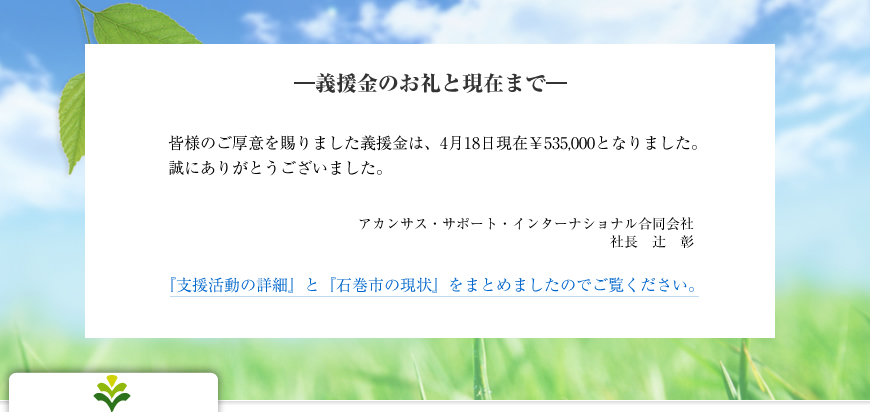

2011年6月27日
兼六建設さん屋上に『ABS屋上農園』が完成しました。
2011年6月8日
兼六建設株式会社さんで第２回『松本農法の勉強会と野菜の試食会』が開催されました。（5月25・26日）
2011年5月20日
写真でみる石巻市の現状 （第2回）
2011年4月20日
義援金のお礼と現在まで
2011年3月16日
東日本大地震義援金のお願い
（PDFが開きます）
2011年3月8日
経済産業省新連携事業が
北國新聞で紹介されました。
[メディア掲載]
2011年2月2日
2月2日、経済産業省新連携事業に認定されました!!
2010年11月16日
11月13・14日、宮城県石巻市の松本塾で、見学会が開催されました。
2010年11月11日
放送告知
『石川テレビドキュメント アングル２０１０ 奥能登発 チャレンジ無農薬野菜』
2010年11月11日
『めいてつ・エムザ』営業企画部の村井嵩章氏が
珠洲の松本塾生、足袋抜さんの圃場を視察されました。
2010年10月26日
10/16の松本明氏の講演会が北國新聞に掲載されました。
2010年10月20日
第二回の松本農法についての勉強会が山本商会さんで開催されました。
2010年10月20日
『恵比寿・大黒 むさし山海まつり』に参加しました。
2010年10月20日
松本塾 松本明氏の講演会が開催されました。
2010年9月28日
兼六建設株式会社さんで松本農法の勉強会と野菜の試食会が開催されました。
2010年9月28日
山本商会さん主催の定例農業勉強会に松本塾長が参加しました。
2010年9月24日
サン・スマイリー農場さんの無化学・無農薬の堆肥作りを支援しています。
2010年9月22日
松本明氏 講演会開催します。
2010年9月22日
珠洲の若い塾生の野菜、金時草が初出荷です。
2010年9月15日
南砺市利賀村のスターフォーレスト利賀にて松本塾の勉強会を開きました。
2010年9月15日
『海につなげる野菜作り』珠洲市での松本農法の取り組みを支援しています。
2010年2月16日
第3回 INSLA講演会のご案内
2009年8月23日
シンポジウムへのご来場ありがとうございました。
2009年8月5日
8月8日 シンポジウム開催します。
2009年6月19日
第一回総会が開催されました。
2009年6月8日
シンポジウムへのご来場ありがとうございました。
2009年5月20日
北陸中日新聞で紹介されました。
[メディア掲載]
2009年5月19日
6月7日 キックオフシンポジウム開催します。
2009年5月19日
ホームページ開設しました。